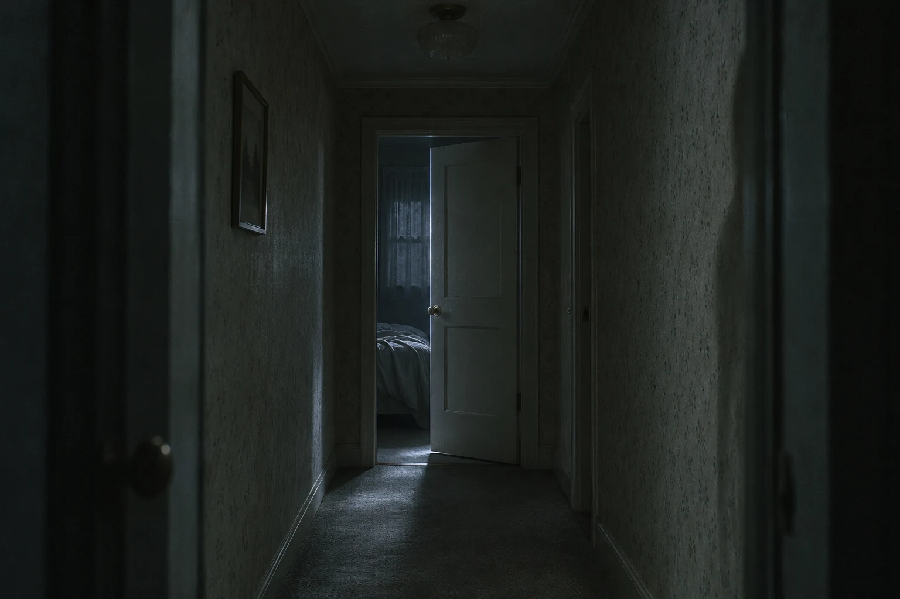

躺下后，多久才睡着？
把上床和入睡分开记录。第二天可以看出，在床上那段时间有多少是真的在睡觉。


眠相床边版
适合想了解睡眠、又不想戴着手表入睡的人。放在床头柜上，它就能记录入睡、翻身和夜里的清醒时间。
为自己的夜晚而用
早上只记得睡得好不好。想知道具体发生了什么，可以先从这三个问题看起。
把上床和入睡分开记录。第二天可以看出，在床上那段时间有多少是真的在睡觉。
监测器只认床面范围内的信号。起床倒水时，报告会标注离床；回来后才接着记录。
醒来后按下开关，报告停在关机那刻。打开晨间报告只是回看，不会开始下一次记录。
从入睡到清晨
无需守着手机。眠相会根据这一晚的实际情况整理报告，早上打开就能看。
晨间报告
看入睡时间、夜里醒了多久，还有哪些片段值得回看。点一下时间，直接看那一刻的记录。
晨间报告样本 B-041
23:48 检测到一位使用者入睡。
看懂晨间报告
我们把睡眠活动和设备状态放在同一份报告里。看见不熟悉的标记时，先对照那一刻床上有没有人、设备开着还是关着。
一次正常的起夜
设备记录床上的活动。打开这份报告，只是把这些活动读一遍。
监测开关
偶尔只想睡个觉，也可以。关掉眠相，新的记录就停在那一刻，已经生成的晨间报告可以照常查看。
帮助中心
关于设备开关、报告里的标记，以及一晚能记几个人。
设备一关，新的记录就停止。历史报告可以在这里照常查看。
床边版面向单人使用。每一晚的摘要只对应一位使用者。
有些片段受环境干扰，暂时无法判定。它们会单独列在报告附注里。
查看报告和监测是两件事。网页只显示设备已经保存的记录。
首页显示你设备上的当前时间。报告保存昨晚的时间，方便第二天回看。
试用晨间报告
一晚、一位使用者、一份晨间摘要。你可以先打开一份样本，看看是否合适。
报告附注 · B-041
这间房只有一张床，报告也登记了一个人。设备在 02:17 检测到两组规律的呼吸，于是先把其中一组标成了背景。

02:16:59B-041使用帮助 · 关机后仍有记录
使用者从手机打开了这份报告，想确认最后一条记录的时间。设备状态显示已离线，报告却多了一条更新。
报告 B-041 · 处理记录
报告应该在这里结束。
同一份报告把 03:19 标成了「重新入睡」。
这就是你进入这页的时间。床边设备仍处于离线状态。
关机后的记录
左边是卧室设备停下时的记录。右边来自这个页面。试着往回滑一小段，再看哪边会变。
这就是 03:19 出现的新来源。设备关掉了，同一份报告却把打开网页的人当成了床上的人。
眠相 · 最新状态
正在用本次访问替换样本报告。